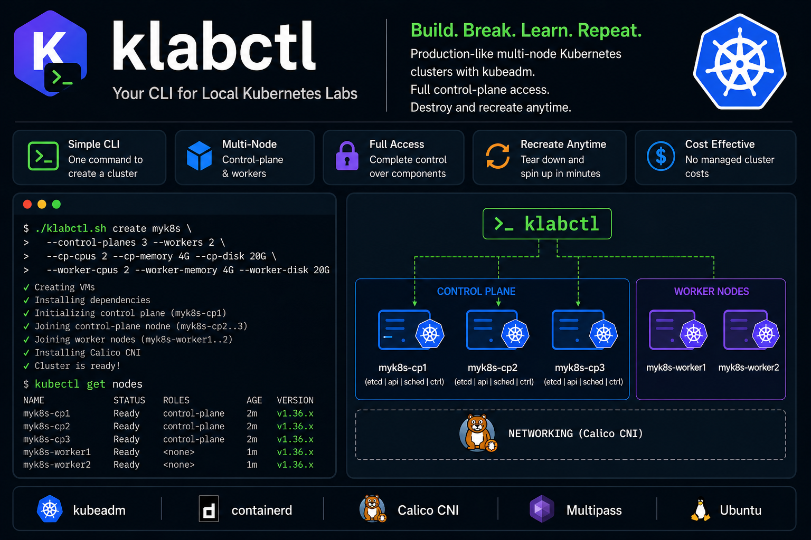

One command
klabctl create launches the VMs, installs containerd and kubeadm, initializes the control plane, joins the nodes, and installs Calico.
Build. Break. Learn. Repeat.
klabctl creates production-like multi-node clusters on Multipass with kubeadm. Separate control-plane and worker VMs, Calico, and a kubeconfig on your machine. No managed cluster cost.

Use kind or Minikube when you only need to run an app. Use klabctl when you want the node, the join flow, and the control plane.
klabctl create launches the VMs, installs containerd and kubeadm, initializes the control plane, joins the nodes, and installs Calico.
Control-plane and worker counts are yours. A 3 control-plane, 2 worker lab is a create flag, not a diagram.
Inspect kubelet, certificates, containerd, and systemd. Restart a node. Practice the failures managed clusters hide.
Ubuntu 24.04 or newer, and Ubuntu-based systems such as Linux Mint and Pop!_OS. Install Multipass first. KVM has to be enabled. The Multipass installation guide has the current steps.
# Multipass runs the cluster VMs sudo snap install multipass # klabctl sudo add-apt-repository --yes ppa:skalekontrol/klabctl sudo apt update sudo apt install klabctl
Install kubectl on the host before kubectl get nodes. For the default 1.36 cluster, host kubectl 1.35, 1.36, or 1.37 is in range.
Examples use a cluster named k8s. Its VMs are k8s-cp1, k8s-worker1, and so on. Multipass has to be installed before any command except version.
list nodes create shell start stop refresh delete version
list prints clusters created with the klabctl naming convention, and how many of their VMs are running.
klabctl list
Without a name, nodes lists every Multipass VM. With a name, it lists only that cluster.
klabctl nodes klabctl nodes k8s
The default lab is one control plane and one worker, Kubernetes 1.36, 2 vCPU, 4G RAM, and 10G disk on each node. Host kubectl needs to be installed. Create writes kubeconfig-k8s.yaml, merges it into ~/.kube/config, and switches the current context to k8s.
# Default lab klabctl create k8s # Three control planes and two workers klabctl create lab --control-planes 3 --workers 2 # Sizes are per node klabctl create lab \ --control-planes 3 --workers 2 \ --cp-cpus 2 --cp-memory 4G --cp-disk 20G \ --worker-cpus 2 --worker-memory 4G --worker-disk 20G kubectl get nodes
shell opens a shell on a cluster VM. The default node is <cluster>-cp1. Pass a node name to open a worker or another control plane.
# Shell on the first control plane klabctl shell k8s # Shell on a worker klabctl shell k8s k8s-worker1
start boots that cluster’s VMs, then refreshes kubeconfig and the hosts file because the IP addresses can change.
klabctl start k8s
stop shuts down that cluster’s VMs and leaves every other Multipass VM alone.
klabctl stop k8s
After a restart, the control-plane IP may have changed. refresh rewrites kubeconfig-k8s.yaml from k8s-cp1 and writes k8s-hosts with the current addresses.
klabctl refresh k8s
delete removes that cluster’s VMs, its context from ~/.kube/config, kubeconfig-k8s.yaml, and k8s-hosts. It asks before deleting. --yes skips the prompt. --purge reclaims disk from deleted Multipass instances.
klabctl delete k8s klabctl delete k8s --yes --purge
version prints the installed klabctl release and does not need Multipass.
klabctl version klabctl help
The same release is installed on every node. Pick a minor for its newest patch, or pin a patch.
| Setting | Value |
|---|---|
| Default | 1.36, newest patch |
| Targeted minors | 1.35, 1.36, 1.37 |
klabctl create lab --k8s-version 1.35 klabctl create lab --k8s-version 1.36.5